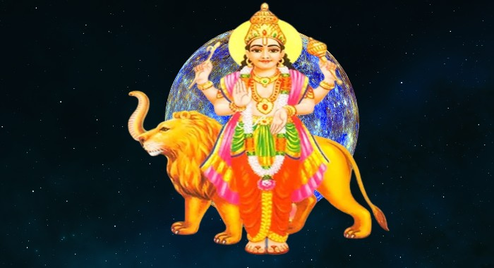

Budh Puja - Worship of Budh (Mercury)
Budh Puja: Worship of Budh (Mercury)
Budh Puja is a sacred Hindu ritual dedicated to Budh (Mercury), the planet of intellect, communication, and commerce. Performing this puja is believed to enhance intelligence, clear communication, and improve financial stability.
What is Budh Puja?
Budh Puja is a Hindu ritual dedicated to Budh, the planet Mercury. Budh is associated with intelligence, wisdom, communication, and financial prosperity. By performing Budh Puja, devotees seek to enhance their intellectual abilities, improve their communication skills, and achieve success in business and education.
Why Do We Perform Budh Puja?
- Enhance Intelligence: Budh is the planet of intellect, and performing the puja is believed to enhance one’s learning capabilities and cognitive skills.
- Improved Communication: Budh is linked with speech and communication. Worshipping Budh helps improve the way we express ourselves.
- Business Success: Mercury is the planet of commerce, so worshipping Budh can improve financial prospects and business success.
- Relieve Negative Influence: Helps mitigate the malefic effects of Budh in one's birth chart.
- Education and Career: Enhances career growth and academic performance.
Benefits of Budh Puja
- Intellectual Growth: Boosts mental clarity and intellectual abilities.
- Improved Speech: Helps in better articulation, public speaking, and communication.
- Financial Prosperity: Increases financial stability and success in business.
- Enhanced Career Opportunities: Opens doors for new career prospects and growth in one's profession.
- Removes Obstacles in Education: Helps students excel in studies and clear exams with ease.
How to Perform Budh Puja (Step-by-Step)
Budh Puja is best performed on Wednesdays, which is dedicated to Mercury. Here's a step-by-step guide:
- Preparation: Clean the place where the puja will be performed. Gather items like a picture or idol of Budh, green fruits (such as pears), green clothes, incense, and a lamp.
- Offer Water: Take a glass of clean water and offer it to Budh while chanting his mantra.
- Chant Budh Mantras: Recite mantras like "Om Budhaya Namaha" 108 times to invoke the blessings of Budh.
- Offer Green Items: Offer green fruits (such as pears, grapes), green cardamom, and other green items, which are sacred to Budh.
- Light the Lamp: Light a lamp using ghee or mustard oil as an offering to Budh.
- Prayers: Close your eyes and pray for wisdom, success in education and business, and the removal of any obstacles.
- Perform Aarti: Move the lamp in a circular motion while singing praises to Budh.
- Prasad: After completing the ritual, offer prasad such as fruits or sweets and distribute it among friends and family members.
Conclusion
Budh Puja is a powerful ritual for anyone seeking to improve their intellectual abilities, communication skills, and financial prosperity. By performing Budh Puja regularly, devotees can gain wisdom, achieve success in their endeavors, and alleviate any negative effects associated with the planet Mercury in their astrological chart.